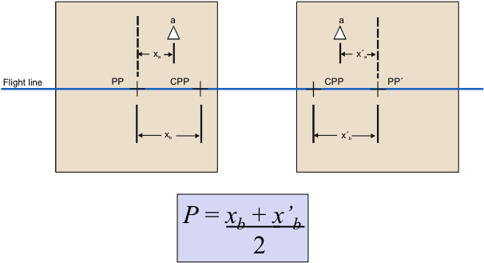

Press 'o' to toggle the slide overview and 'f' for full-screen mode.
Choose the theme in which to view this presentation:Black - White - League - Sky - Beige - Simple
Serif - Blood - Night - Moon - Solarized
Copyright © John Lindsay, 2015
GEOG*2420
The Earth From Space
Photogrammetry Part 3
John Lindsay
Fall 2015
Methods based on parallax
- The effect whereby the position or direction of an object appears to differ when viewed from different positions.
- These are the most useful approaches to measuring heights from images.
- Requires high quality stereoscopic photo pairs (two overlapping images).
- Image tilt must be less than 3 degrees.
- Images must be taken from the same height.
Parallax
Parallax
Steroscopic viewing methods
Lens Stereoscope with Parallax Bar
Notice that the average absolute parallax (Distance between PP and CPP) is the image distance equivalent to the air base.
Parallax equation for level terrain
\(h = \frac {H{dP}}{P + {dP}}\)
- h = height of the object being measured
- H = flying hgt. above the object base
- P = Average absolute parallax (avg. Distance between PP and CPP)
- dP = difference in parallax between top and bottom of the object
Parallax equation for mountainous terrain
\(h = \frac {H{dP}}{P + \frac {P \Delta E}{H} {dP}}\)
- ΔE = Elevation difference between the object base and the average of the two PPs, + if higher and – if lower.
Measuring P
Measuring dP
Measuring dP
Using a parallax bar to
measure differential parallax
Extraction of Building Infrastructure Using
Soft-Copy Photogrammetric Techniques

Digital Elevation Models (DEMs)
- You can calculate the parallax for any location on stereo-images.
- It is commonly the case that this would be done along a regular grid and these x, y, z points then used to create DEMs.
Digital Elevation Models (DEMs)
Photogrammetry isn't just
about measuring heights
- It also includes measuring heights, angles, distances, and areas.
- Why might you want to measure an area off imagery?
The challenges...
- It's easy to measure the area of simple shapes but what about more complex shapes?
- Images are not maps and are affected by distortions and displacements.
- Raw images have non-uniform scale throughout.
Areas of simple shapes
But what about the area of this?
Methods for measuring areas
- Weight apportionment method
- Calculates the percent coverage of a particular land cover compared to total
- Need a very precise balance
- Dot count method
- Transparent overlay with fine grid of dots
Methods for measuring areas
- Planimeter
- Specially designed instrument to measure perimeters and areas
- Must convert to ground units.
- Digitizing tablets
- On-screen digitizing
On-screen digitizing
- Either scan a hardcopy image or use digital imagery.
- Digitizing takes place in a geographic information system (GIS).
- Each digitized polygon becomes a record in a GIS attribute table.
- The attribute (e.g. Forest, farmland), perimeter, and area are easily queried from the table.
On-screen digitizing
- Best to geometrically rectify before you digitize!
- This is the process of creating an orthophoto to serve as the base for digitizing.
Orthophotos/Orthoimages
- Convert images with perspective projections (conical bundle of rays) to an orthographic projection (parallel rays)
Orthophotos/Orthoimages
- The effects of tilt and relief are removed.
- An orthophoto is a uniform-scale photograph. It is a
photographic map . - Since an orthophoto has a uniform scale, it is possible to measure directly on it like other maps.
Orthophotos/Orthoimages
- The accuracy of a digital orthoimage is a function of:
- The quality of the raw imagery
- The ground control points (GCPs)
- The quality and character of the DEM